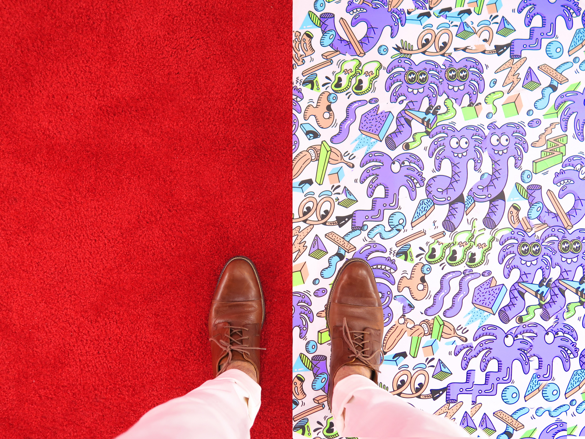

Null-Bock-Effekt
Der Null-Bock-Effekt wird, wie oben bereits erwähnt,
vor allem durch die klassische Übermüdung und durch übermäßiges
Chillen hervorgerufen.
 Das interessante am Null-Bock-Effekt ist, dass er sowohl die
Müdigkeit und vor allem das Chillen noch weiter verstärken.
Für den behandelnden Arzt ist es daher nahezu unmöglich zu
erkennen, ob sich sein Patient erst im Anfangsstadium befindet
oder schon kurz vor dem Eintritt in die Nihilitis steht.
Zwar gibt es am Anfang noch äußerst wirkungsvolle Medikamente,
die jedoch alle nur in der sogenannten "frühen Lustlosigkeit",
also im Anfangsstadium, angewendet werden dürfe, da sie ansonsten
zu schweren Missbildungen und Psychischen Ungleichgewichtungen
führen können (z.B. Frühaufstehertum, früher Altersdemenz in
seltenen Fällen auch zur Überproduktion von Vitamin C).
Das interessante am Null-Bock-Effekt ist, dass er sowohl die
Müdigkeit und vor allem das Chillen noch weiter verstärken.
Für den behandelnden Arzt ist es daher nahezu unmöglich zu
erkennen, ob sich sein Patient erst im Anfangsstadium befindet
oder schon kurz vor dem Eintritt in die Nihilitis steht.
Zwar gibt es am Anfang noch äußerst wirkungsvolle Medikamente,
die jedoch alle nur in der sogenannten "frühen Lustlosigkeit",
also im Anfangsstadium, angewendet werden dürfe, da sie ansonsten
zu schweren Missbildungen und Psychischen Ungleichgewichtungen
führen können (z.B. Frühaufstehertum, früher Altersdemenz in
seltenen Fällen auch zur Überproduktion von Vitamin C).
Frühe Lustlosigkeit
Dieses Stadium wird zumeist durch übermäßiges Chillen erreicht.
In dieser Phase ist eine Behandlung mit Amphetaminen oder Essig noch möglich,
allerdings sehr unwahrscheinlich.
Späte Lustlosigkeit
Neben dem Chillen können nun erhöhte Schlafraten und Schwerhörigkeit auftreten.
Eine Behandlung ist theroetisch immer noch möglich.
Null-Bock-Phase
Wie in der späten Lustlosigkeit erfolgt der Übergang schleichend und wird vom
behandelnden Arzt oft nicht erkannt. In den meisten Fällen wurde jedoch beobachtet,
dass in der Null-Bock-Phase der Patient sein Gespür für Sauberkeit und Hygiene
verliert und aufgrund dessen das Klo höchstens zum Trinken benutzt. Eine Behandlung
ist nicht mehr möglich und führt zu obengenannten Nebenwirkungen
Nihilismus
Der Nihilismus tritt in etwa 48% aller Fälle auf und wird als erweiterter
Null-Bock-Effekt betrachtet, obwohl auch Fälle bekannt sind, in denen
Nihilismus ohne vorhergegangenen Null-Bock-Effekt aufgetreten sind [[.]]

Bekämpfung
Bis heute konnte kein wirkungsvolles Mittel gegen den Null-Bock-Effekt gefunden werde.
Jeder und jede Betroffene sollte Aktivitäten aller Art vermeiden und nach
Möglichkeit über die Dauer der Krankheit im Bett bleiben.
Auf gar keinen Fall sollte der Arbeitsplatz oder die Schule aufgesucht werden,
aus welchem Grund auch immer. Dies würde den Verlauf beschleunigen und ein schwere
Nihilitis kann die Folge sein. Daher wird geraten seine Zeit mit anhaltendem Schlafen
oder Langzeitgammeln zu verbringen.